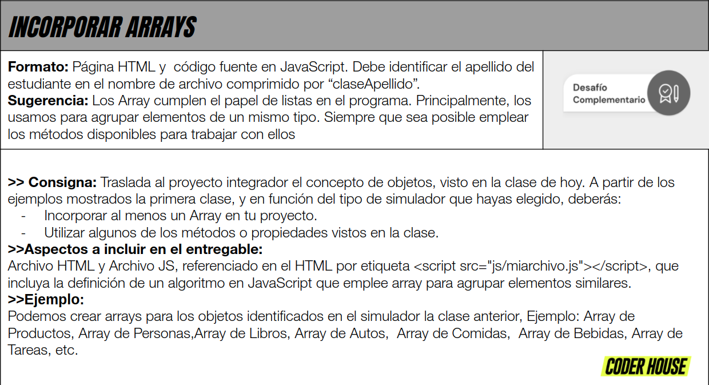

Consiga:
La solucion al desafio planteado consiste en crear un listado de alumnos con sus correspondientes notas a cierta materia, el profesor podrá insertar el resultado de 5 exámenes por cada alumno.
El programa puede
- Cargar el nombre de cada alumno
- Guardar en un arreglo las notas de 5 examenes por cada alumno
- Calcular el promedio de cada alumno
- Verificar si el alumno aprobó o desaprobó la materia
- Mostrar cuantos alumnos han aprobado la materia
- Crear un listado de alumnos aprobados y desaprobados
- Ordenar el listado de alumnos dependiendo sus promedios
- Mostrar que alumno tiene el mejor promedio